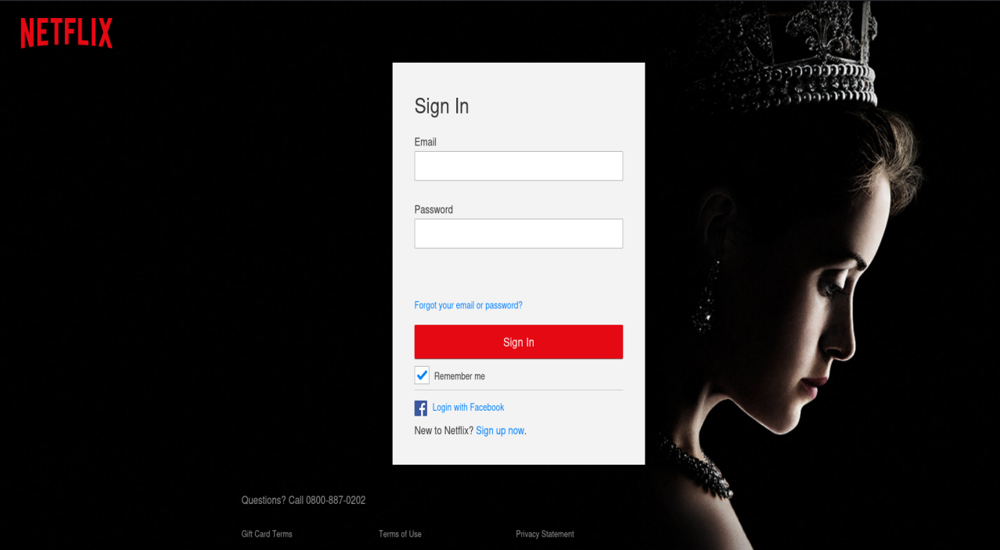
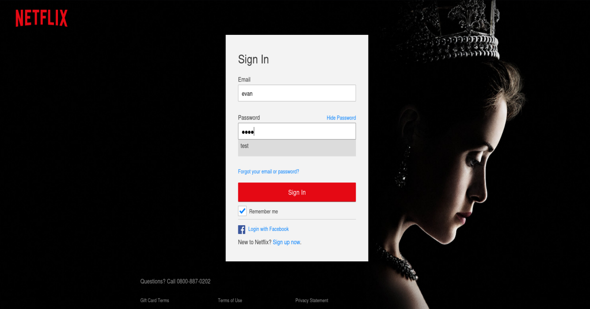
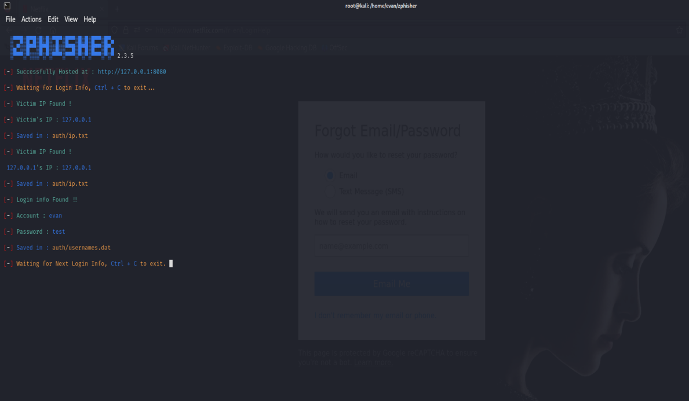
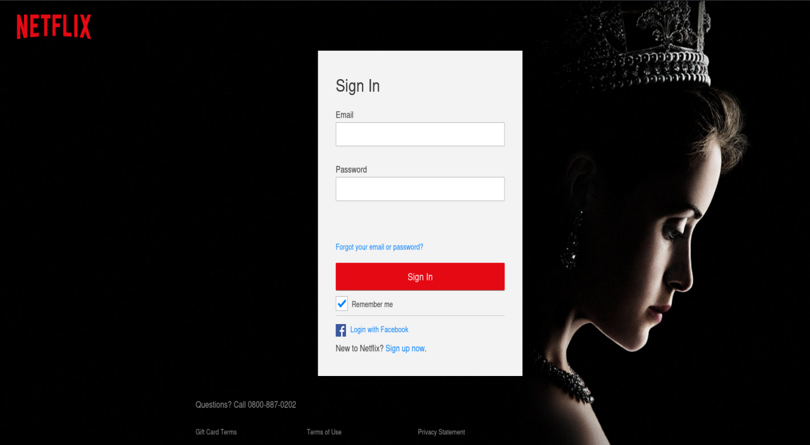
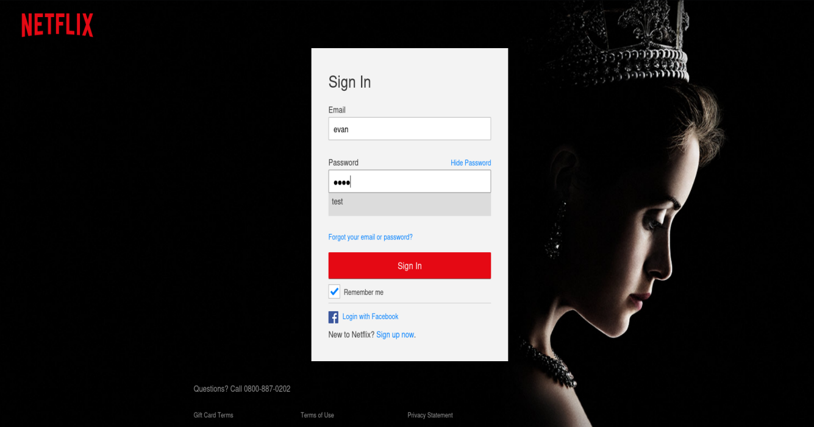
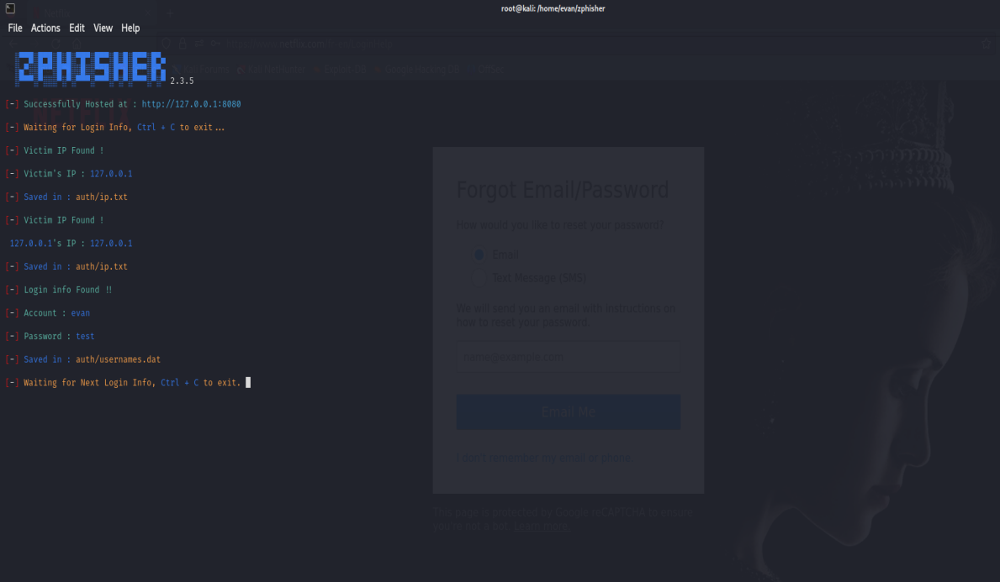

Date de début
commencement : 23/01/2023
fin : 24/01/2023
compétences : Répondre aux incidents et aux demandes d’assistance et d’évolution, Organiser son développement
professionnel
commencement : 23/01/2023
fin : 24/01/2023
compétences : Répondre aux incidents et aux demandes d’assistance et d’évolution, Organiser son développement
professionnel
Zphisher est un outil open source de phishing automatisé qui peut être utilisé pour créer des pages de phishing pour différentes plateformes populaires telles que Facebook, Instagram, Twitter, etc. Il est intégré dans Kali Linux, une distribution Linux spécialisée dans la sécurité informatique et le piratage éthique.
Il simplifie le processus de création de pages de phishing en automatisant de nombreuses étapes. Il génère des liens de phishing prêts à l'emploi que vous pouvez envoyer à vos cibles. Une fois que la cible clique sur le lien et entre ses informations de connexion, celles-ci sont enregistrées et stockées pour que vous puissiez les récupérer ultérieurement.
 




